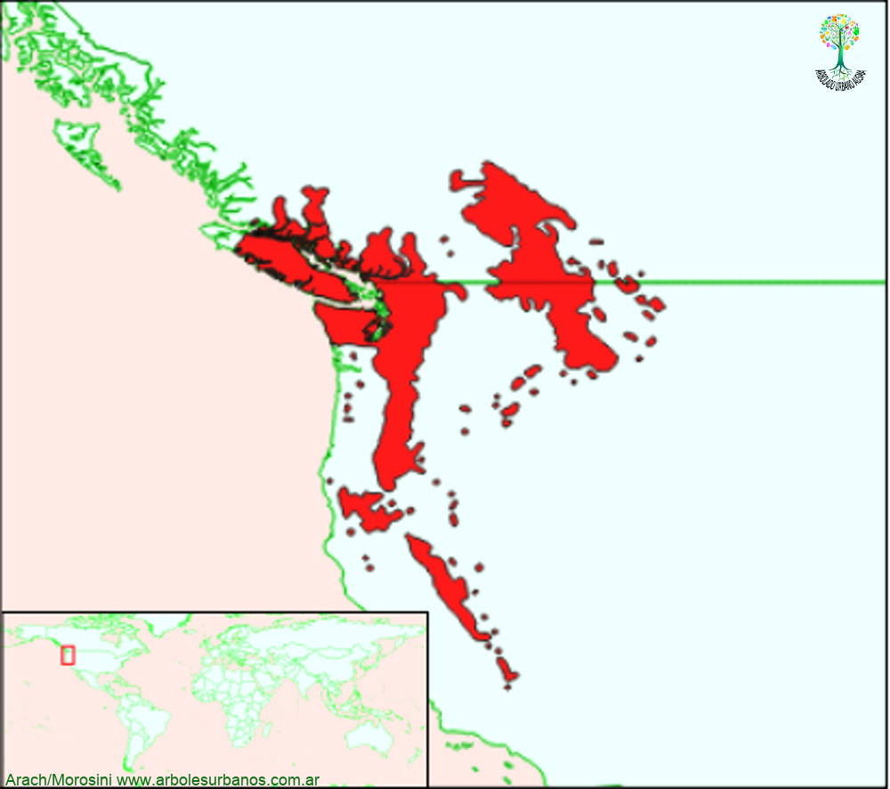

Pinus monticola (Pino blanco del oeste)

Click en las imágenes para ampliar
Pino blanco del oeste, pino blanco occidental
NOMBRE CIENTÍFICO: Pinus monticola
FAMILIA BOTÁNICA: Pináceas
ORIGEN: Habita en América del norte, desde las montañas Rocallosas hasta la costa del Pacífico, Estados Unidos y Canadá (desde California hasta la Columbia Británica)
DESCRIPCIÓN GENERAL: Gran árbol, en su área de origen llega a superar los 65 metros de altura y los 2 metros de diámetro. De porte anchamente columnar. Su corteza juvenil es gris clara, lisa con burbujas de resina, cuando adulta está fisurada en placas irregulares.
HOJAS: Sus hojas son acículas reunidas en grupos de a 5, son verde azuladas de hasta 15 cm. de largo.
ESTRÓBILOS: Los estróbilos aparecen a principios de primavera, los masculinos son amarillos cilíndricos y reunidos en grupos en los extremos de las ramas, las femenina son pequeñas y rojizas, que luego de fecundados se transforman en piñas de hasta 20 cm. de largo ,algo curvados y resinosos.
USOS: En origen tiene usos forestales, posee una madera clara, de grano derecho y muy estable, se la utiliza como madera estructural, aberturas, debobinados y pasta de celulosa. También tiene usos ornamentales, especialmente plantado como ejemplar aislado.
REPRODUCCIÓN: Se lo multiplica por semillas.
PARTICULARIDADES: Junto a esta especie, se pueden encontrar otras dos especies de “pinos blancos”, como llaman a los pinos de 5 acículas, el Pino blanco del este ( Pinus strobus ), y el Pino del Himalaya ( Pinus wallichiana ).
{kind=link}
{kind=link}
{kind=link}
{kind=link}
{kind=link}
{kind=link}